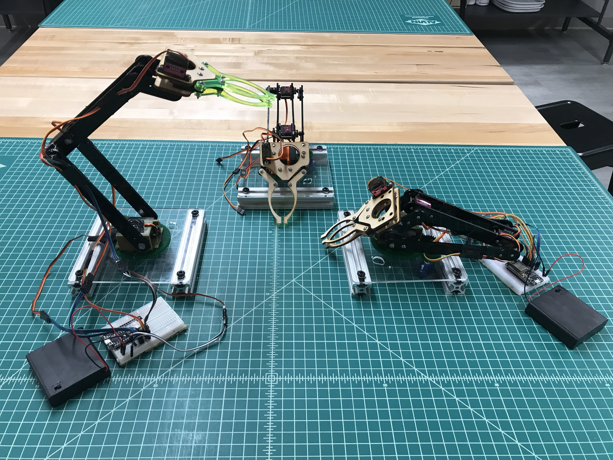

// projects showcase //

Firefighting Robot
This robot was built to compete in the 2017/2018 Trinity International Firefighting competition.
See More
Drivable Couch
This drivable platform (pictured) is soon to be a drivable couch once suitable furniture can be found...
See More

DUM-E Arms (v1)
These IOT arms were created in 24 hours at MakeHarvard 2019, and will be used as a teaching tool for robotics.
See More
LEGO Robots
These robots were created as part of a Tufts course, and made out of LEGO. There are 4 robots shown here.
See More